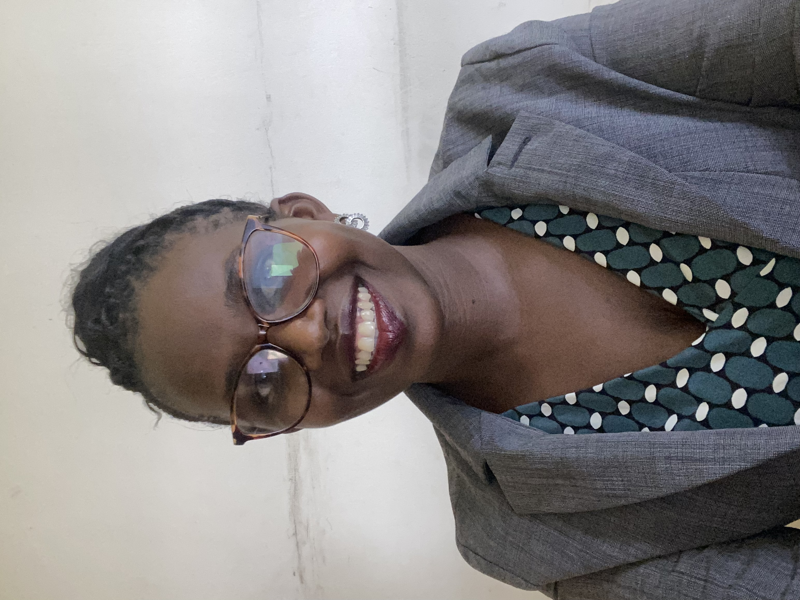

KATUSIIME ALLEN

Gayaza,Kampala Uganda.
+256785994439/+256700621880/katusiimeallen@gmail.com
Personal Details
Marital Status: Married
Nationality: Ugandan
Professional Summary
As a Junior UI/UX Designer with a keen eye to detail and a deep understanding of user centered design
principles,i bring a fresh perspective and creative problem-solving skills.I have experience using design tools
like Figma.I have Web development skills using HTML,CSS and Java Script.I aim to enhance user satisfaction and
drive business success through innovative design solutions.
Skills
- Basic Knowledge of HTML,CSS and JavaScript
- Proficient in Figma
- Wireframing,prototype and high fidelity mockups
Knowledge of designsystems and responsive design principles
- Creating user personas,journey maps and user stories.
- Effective collaboration with cross-functional teams including developers,product managers,and stakeholders
- Strong verbal and written communication skills
- Ability to present and justify design decisions
- Experience using project management tools like Jira
- Ability to manage time effectively and meet deadlines
- Detail-oriented and organised in handling multiple projects simultaneously
Experience
Fedspar Ltd
UI/UX Designer
April 2024-Todate
Duties and Responsibilites
- Develop wireframes,prototypes and high fidelity mockups to visualise design concepts
- Create intuitive and pleasing uer interfaces that enhance user experience
- Ensure designs are aligned with the brand's visual style and guidelines
BPOSeats.com
HR/Accounting independent Contractor
Dec 2021 - May 2022
Duties and Responsibilites
- Exercised oversight and advisory functions in matters related to Human resources and
Accounting.
- Set up a team in Africa,trained,coached and supervised them.
- Processed documentation in relation to HR and Finance policies.
- Prepared reports relating to employment activities.
- Oversaw preparation and Auditing of payrolls.
Education Background
Udemy:Web development bootcamp
May 2024 todate
UX Designer professional Google Certificate
April 2024 todate
Udemy:Advanced Figma Certicate
April 2024 todate
Institute of Certified Public Accountants of Uganda
CPA Level 11
March 2019-Dec 2021
Kampala International University
Masters of Business Administration
My hobbies
My Contacts